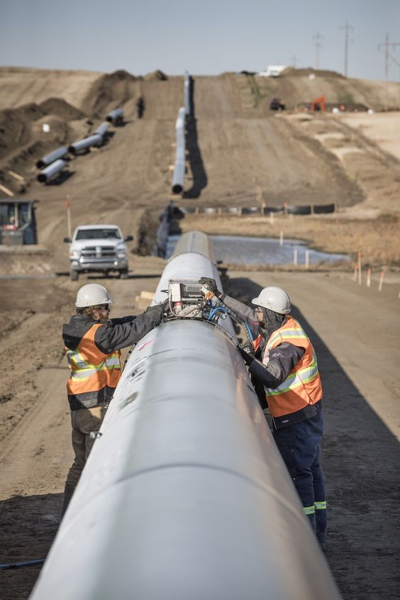
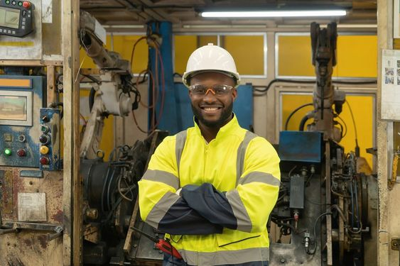

Jobs for SMAW Students



The SMAW (Shielded Metal Arc Welding) strand focuses on teaching students the fundamental techniques and skills of arc welding, including electrode selection, welding positions, and proper welding procedures, to equip them with the knowledge and expertise required for a career in welding and metal fabrication.
SMAW (Shielded Metal Arc Welding) is a major subject that encompasses the practical application and theoretical understanding of welding using a manual arc welding process, where a consumable electrode coated in flux is used to create strong and durable metal joints. Students learn the essential skills and techniques required for various welding applications, ensuring they are well-prepared for careers in welding and related fields.
The SMAW (Shielded Metal Arc Welding) strand at AASMNHS involves hands-on training and skill development in various welding techniques using shielded metal arc welding equipment. Students in the SMAW strand engage in practical welding exercises, learning how to join and fabricate metal structures and components using arc welding processes.